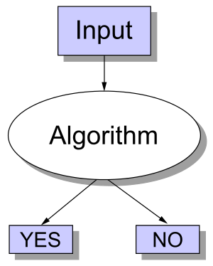
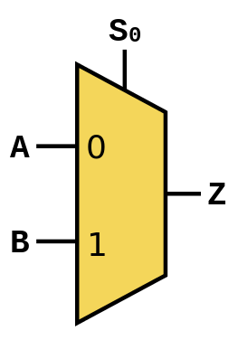

Accessible Satisfiability
Even though it was just a scant few years ago, my research in grad school seems like it was from another lifetime. Nowadays I deal with data and most of my code revolves around manipulating and extracting interesting insights from it. However in my previous life I spent quite a bit of time dealing with satisfiability problems. So before I start writing about data and related topics, I thought I'd kick it old school and write about some topics from my formative years.
Decision, P, NP and NP-Complete Problems
Note: Feel free to skip this section if you're already familiar with these topics.
Before we get into some of the more heavy stuff, let's review some of the "basic" concepts that will help us put the satisfiability problem in context. I'm going to skip a lot of the formal math that typically comes from the branch of compute science called the theory of computation. Instead, I'm going to try to explain it in a simpler way -- or at least in the way that I understand it [1].
One of the fundamental problems in computing is a decision problem: something that has a yes/no answer. We can think of solving a decision problem as taking a realization of that problem, also known as an instance, as input and writing an algorithm that spit out the yes/no output (image from Wikipedia):
Pretty simple, huh? Now there are other types of problems like function problems and optimization problems but you probably have some intuition that decision problems are something fundamental that we should be studying [2].
How fast can you go?
Now that we have a rough idea of what decision problems are, we can talk about the computational complexity of these problems. It's actually much more intuitive than it sounds. Basically, we want to answer questions about how many resources (e.g. CPU run-time, memory, network bandwidth, circuit size etc.) will be needed to solve a particular decision problem. Seems like a reasonable thing to investigate. For now, let's just focus on one of these aspects: run-time. Our goal here is to classify different types of problems in terms of how easy (or hard) they are to solve in terms of run-time.
If you've done any study of algorithms, you probably have a rough idea of the idea of polynomial time problems. Roughly speaking, if you can write a program to solve a decision problem (correctly) and its run-time scales polynomially with the size of the input, then you've got a polynomial time decision problem. Another name for this class of decision problems is "P". For example, let's define a decision problem FINDX:
FINDX: Does an array of \(n\) integers \(A = [a_1, a_2, \ldots, a_n]\) contain integer \(x\)?
FINDX is in the class of decision problems P because it's simple to write an algorithm that gives a yes/no answer in linear time in the size of the array \(A\) [3]. A more succinct way of saying this is that FINDX is in P.
NP What?
So up to this point, I think most programmers will have a reasonable understanding of these concepts. Where it gets hairy is when we start talking about NP problems. The underlying idea is not complicated but it is, well, strange.
When we write code, most of us are thinking about how to solve a problem. It's quite natural to do so and, in fact, we've defined a set of problems based on how fast we can solve them, the class of problems called P. However, NP problems are defined differently. It's not about how fast we can solve a problem, but how fast we can verify a potential answer to the problem [4]. In particular, NP is about how fast we can verify a potential answer (and proof of that answer) is correct. Say what?
Let's look back at our example to make a bit more sense of this definition. If we take the above example above of finding \(x\) in an array \(A\), we're not trying to figure out a solution to this problem, we're trying to figure out something different:
Given \(A = [a_1, a_2, \ldots, a_n]\), we are told that \(x\) is in \(A\) and some proof (like the index into \(A\) where x is), can we write an algorithm (in polynomial time) to figure out if what we are told is correct?
It turns out, yes, we can write that algorithm: we just need to look up the index where \(x\) is said to be. So we would say, that FINDX is in (the class of decision problems called) NP.
Stop and think about this for a second. To figure out if FINDX was an NP problem, we didn't look at how easy it was to solve, but rather how easy it was to verify a potential solution was correct!? Why would we ever want to define problems in such strange, roundabout way?
It turns out that many important, naturally arising problems can be classified as NP. Here are some more examples (try to see if you figure out why these would be classified as NP problems [5] ):
- "Is an array of integers sorted?" (might want something like this for binary search)
- "Is there a path from vertex \(s\) to vertex \(t\) in graph \(G\)?" (something that you might want to do in a program like Google Maps).
- "Given a Boolean formula, is there an assignment to the variables to make the formula true?"
The last one is of particular note because that is what we're going to be talking about in the next section. Also note, that we saw that FINDX was in both P and NP. The more general result is that all all decision problems in P are in NP (but most likely not the other way around) [6].
There's one last concept that I should mention and that's the idea of NP-complete problems (NPC for short). Without going into too much detail, a good way to think about it is as the "hardest problems" in NP. In the examples above, the problems that are in P (e.g. FINDX) are typically considered "easy". Whereas the last problem is considered "hard". Suffice it to say, NPC problems are important because they arise naturally in many contexts and are "hard" to solve.
NP is not "not polynomial"
Before we end this section, a very important caution: NP does not stand for "non-polynomial" or "not polynomial", as one would intuitively think. P stands for (roughly) polynomial time, so doesn't it make sense for the "N" in NP to stand for "non-" or "not"? Nope, apparently not. I agree though that it's not a great name now-a-days much to the chagrin of students new to computational complexity (it does make more sense using another definition of NP though) .
NP actually stands for "non-deterministic polynomial time". The details aren't too important but the big takeaway is this: NP-Complete problems probably have no polynomial time solution in the worse case. But as we saw, P problems are a subset of NP problems so at least some NP problems can be solved in polynomial time. Basically, NPC \(\approx\) problems with no polynomial time solution (probably); P \(=\) polynomial time problems.
Satisfiability
In the previous section, we discussed some theoretical ideas around NPC problems and how they can be really difficult (e.g. probably exponential time in the worse case). However, in many cases the NPC problems we come across rarely get into this worse case behavior, allowing us to practically solve some rather interesting problems. Let's take a look at a particular NPC problem and some of its applications to see why this might be the case.
Boolean Satisfiability
One of the most important NPC problems (and in fact the very first one to be proven NPC) is the Boolean Satisfiability Problem or SAT for short. The definition from Wikipedia:
A propositional logic formula (\(\phi\)), also called Boolean expression, is built from variables, operators AND (conjunction, also denoted by ∧), OR (disjunction, ∨), NOT (negation, ¬), and parentheses. A formula is said to be satisfiable if it can be made TRUE by assigning appropriate logical values (i.e. TRUE, FALSE) to its variables. The Boolean satisfiability problem (SAT) is, given a formula, to check whether it is satisfiable.
So basically, given a Boolean formula with Boolean variables, can we find an assignment to the variables to make it true. A trivial example of a SAT instance might look like Eqn. 1 (recall \(\wedge\) means "AND"; \(\vee\) means "OR):
It's trivial to see how we could make \(\phi\) true (just set \(x_0=1, x_1=1\)).
Before moving on to some applications of SAT, let's just convince ourselves that SAT is in NP. So given a Boolean formula (e.g. \(\phi\)), and a potential solution (e.g. \(x_0=1, x_1=1\)), can we verify that the potential solution is correct in polynomial time? Yes, take a look at the footnote for a brief explanation [7].
Practically though, we rarely care if we can verify a potential solution in polynomial time; we usually just care about finding a solution i.e. the values of \(x_0\) and \(x_1\) that make \(\phi=1\). A naive algorithm is just try all possible values of the input variables. So for Eqn. 1, we could just try \((x_0=0, x_1=0)\), \((x_0=0, x_1=1)\), \(,(x_0=1, x_1=0)\), \((x_0=1, x_1=1),\) and see if any yield \(\phi=1\). It's not too hard to see that there are \(2^n\) possible values for \(n\) Boolean variables [8]. Leading us to an exponential algorithm in the worse case.
In fact, we don't really know of a better algorithm that can find a solution to SAT in less than exponential time (in the worse case). Most modern SAT algorithms use some smarter ways to explore the exponential space of variable values but invariably, they must try an exponential number assignments in the worse case.
The interesting thing about this worse case scenario is that in many domains it doesn't really apply [9]. SAT is widely used in many applications (some of which we'll describe below) despite this theoretical worse case scenario. Through a combination of clever engineering [10] and application of theory, SAT solvers have become increasingly efficient at solving many practical problems across a variety of domains. We should never forget the old adage:
In theory, theory and practice are the same. In practice, they are not.
From Bits to Bytes
So now that we know a bit more about SAT, how the heck is this going to help us solve problems we actually care about? To answer that, let's remember how digital computers are built: at the lowest level, we have atoms; at the next level we have transistors; but at the level we actually care about we have logic gates i.e. AND, OR, NOT gates, the same operators we used in our Boolean formula!
From these basic logic gates, we can start building more complicated formulas that represent higher level questions. For instance, imagine we have three 8-bit numbers \(A_2, B_2, C_2\) (the subscript 2 reminds us that we're dealing with binary numbers), and we want to do some addition, we could encode this in a SAT formula that might abstractly look like Eqn. 2:
Here \(ADDER_8\) is a 8-bit hardware adder, that takes two 8-bit numbers \(A_2, B_2\) and produces an 8-bit number C_2. So if we encode Eqn. 2 as a SAT instance and send it to a SAT solver, it will return "SAT" and give us back values for \(A_2, B_2, C_2\) such that \(A + B = C\) [11]! Still not quite that useful since they'll be (from our point of view) random values for the input numbers.
What we actually want is to start asking us more interesting questions, see if you can guess what this encodes (dropping the subscript 2 here for readability, but let's not forget we're dealing with Boolean variables here):
If we send this to the SAT solver, we'll get a "SAT" result with \(C=15\) (in binary). We've effectively implemented 6 + 9 using Eqn. 3.
Okay, so still not that interesting. How about this one?
Here \(COMPARATOR_8(X,Y)\) is an 8-bit hardware comparator implementing \(X < Y\). Now we're getting somewhere. We're asking a much more interesting question:
Are there any (8-bit values) of \(A, B, C\), such that the sum (\(C\)) is less than one of its addends (\(A, B\))?
Do you think this instance should be SAT (i.e. at least one assignment of values for \(A, B, C\) such that \(\phi=1\)) or UNSAT (no such values exist)? See [12] for the answer.
From Bytes to Code
We saw above how we can use SAT to start asking some basic questions around fixed-width arithmetic. We can extend this to much more complicated ideas. For one, all programming languages operate on bits and bytes, so we should be able to ask questions about code too right? Let's take a look at how we can encode some basic structures first.
As a first example, we could build a SAT an instance that looked very similar to the one from the last subsection by translating some C code (except the variables might be signed 32-bit numbers instead of unsigned 8-bit numbers):
int x, y, z; z = x + y assert(z >= x && z >= y); |
Notice that the assert is a property we want to guarantee for all possible values of x, y, z, but our SAT instance can only tell us if there exists one possible way for that to happen. So instead, we'll flip the question around and actually ask the SAT solver something like this:
int x, y, z; z = x + y; assert_exists(!(z >= x && z >= y)); |
Which is just negating what we had in our original assert statement making it a suitable question to ask a SAT solver. And voila, we've just asked the same question as above except on equivalent C code. This process of verifying properties about some piece of code (or more generally any system) is called formal verification. It can help us "prove" correctness about various types of systems like cryptographic protocols, digital circuits, or code as we just saw.
What (about) if's?
Obviously code can get much more complicated than the small snippet above. I won't go into too much more detail but I do want to cover another concept that will help us deal with if statements. Let's look at the following snippet:
int y; if (y >= 0) { y = y + 1; } else { y = -y; } assert(y > 0); |
Here we have two new structures that cause some issues: (a) the re-assignment of y, and (b) the if-else statement. However, both can handled without too much trouble. The easiest way to see this is do some transformations on the code to make it more amenable to SAT. Here's one way to do it:
int y_1, y_2a, y_2b, y_3; y_2b = y_1 + 1; y_2a = -y_1; if (y_1 >= 0) { y_3 = y_2b; } else { y_3 = y_2a; } assert(y_3 > 0) |
There are a couple of things going on here. First, we use a bunch of intermediate variables for all of the computations that we're doing. Remember, we have to translate this code down to bits (Boolean variables) that must all exist within one Boolean formula. There is no concept of sequential operations, so we have additional variables to represent every intermediate computation we do. This is not unlike how we think about building digital logic.
Second, we use a hardware structure called a multiplexor that effectively implements an if-else statement. It can be built from logic gates, so we'll have no trouble putting it into our Boolean formula. Here's an image from Wikipedia that visualizes it:
Here, we set \(A=y\_2a, B=y\_2b, Z=y\_3,\) and \(S_0=(y>=0)\). When \(S_0=0\), it constrains (remember we're in the context of a Boolean formula) \(Z\) to \(A\), when \(S_0=1\), it constrains \(Z\) to \(B\).
Putting this all together, we could build a large Boolean formula that effectively asks the question:
Is it possible for \(y\_3\) to be less than or equal to 0 for the above code snippet?
Pretty cool huh? Of course, industrial strength formal verification tools will use much more complicated techniques and can handle many more types of code structures (like loops). One of the big limitations (and probably a big research area) is scaling these problems. You can imagine that trying to ask questions about the Linux kernel might become untenable due to the size of the problem.
If you're interested you should check out the SAT conference where they have many more interesting types of topics around satisfiability and its applications.
Satisfiability Modulo Theories
One last idea that I want to talk about before we end this section is that of other types of satisfiability problems. In the above discussion, we talked exclusively about Boolean Satisfiability -- formulas that only use Boolean variables. However, there are many more types of satisfiability problems. One quite natural extension is instead of just using Boolean variables, replace them with other types of "things" like real numbers, integers, list, arrays etc. These "things" are more formally called theories, and allow us to ask higher level "questions" rather than trying to convert everything down to the bit level. These satisfiability decision problems are usually referred to as satisfiability modulo theories (SMT) problems.
One interesting thing to note is that while you might expect that this higher level of abstraction would allow us to solve problems more efficiently, the solvers for these other types of SAT problems are much more complicated. This complexity causes some issues in trying to find good heuristics to efficiently solve these types of problems. In many cases, the best solution is still to just reduce your problem down to bits and use Boolean SAT, which can do much more fine grained optimizations. In fact, many SMT solvers do use a Boolean SAT solver as the underlying solving engine (with some nice things on top).
Conclusion
I spent quite a few years learning about SAT and its applications. It's quite an elegant topic because it is a direct application of what appears to be a rather theoretical and core problem of computer science. Hopefully this article helps introduce some of the ideas that took me years to digest in an easy to understand way. Sometimes theory is just theory, but in this case, theory really does lead to practice.
| [1] | Of course a simpler explanation in English without the math, necessarily makes it less precise. So the usual caveats apply. |
| [2] | For some intuition of why we study at decision problems, think about how "difficult" the different types of problems are. A yes/no answer seems a heck of a lot easier than coming up with a function, or optimizing something with constraints. So one way of thinking about it is: if we somehow figure out that a yes/no decision problem is hard, then we can reasonably conclude that the function/optimization "version" of the problem is also hard. Of course it's a bit more complicated but that's how I like to think about it. |
| [3] | A line is a type of polynomial, e.g. \(x = x^k\) where \(k=1\). |
| [4] | There are, of course, many (equivalent) ways to define NP problems. The one I use, which I find most intuitive is from Introduction to Algorithms <https://en.wikipedia.org/wiki/Introduction_to_Algorithms>, known more colloquially as "CLRS" (the first letters of the authors' name). |
| [5] | The explanations in order: (i) If we're told an array is sorted, we just have to run through the array to see if they're sorted. (ii) If we're told there is a path from s to t and the proof is the path, it's simple to see if that path is actually in the graph. (iii) If we're told the formula is true and the proof is the assignment to the variables, we just need to evaluate the formula to see if its true. |
| [6] | This is the P vs. NP problem. |
| [7] | If we are given the assignment to the variables, we just have to plug it into the formula and evaluate it. This is surely a linear time operation in the size of the formula. |
| [8] | Each Boolean variable can be turned off or on independently, so the number of possibilities is \(2 * 2 * 2 \ldots = 2^n\), where \(n\) is the number of Boolean variables. |
| [9] | That is, many instances of the SAT problem do not have this theoretical worse case scenario. That means that with some clever tricks, we have a chance of solving large SAT instances without having to wait for the end of the universe to come about. |
| [10] | If you want to check out a good implementation you should read about the MiniSat solver. The core solver is about 1000 lines of C (with comments) and for a while was the go-to SAT solver for anything to do with SAT. It was (is?) incredibly fast beating most of the solvers at the time, primarily though clever code/memory optimizations. I did a bunch of hacking on this code during graduate school and it's surprisingly easy to work with (mostly because of it's small size). Of course, now-a-days there are faster SAT solvers (many of which are built on top of MiniSat) but it's still quite a robust solution if you need something simple to start with. |
| [11] | Since we're dealing with fixed width operations, there is always a possibility that we overflow -- that is, the resulting number of \(A + B\) is too large to fit within the 8-bits we have for \(C\). |
| [12] | If we were just talking about non-negative integers \(A,B,C\), then the answer should be UNSAT because \(A + B\) should always yield something greater or equal to \(C\). However, we're talking about 8-bit numbers here. If we try to add up two 8-bit numbers whose result can't fit into 8-bits, then we'll get an overflow condition where C will actually be less than A or B. Our first interesting result! |